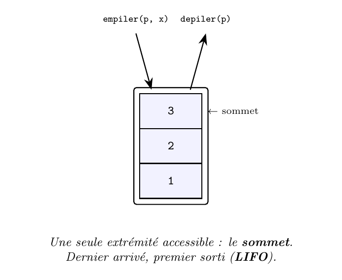
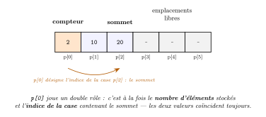
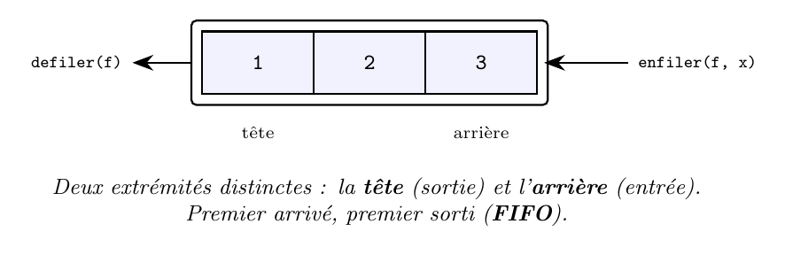

Les structures de données linéaires piles et files⚓︎
Introduction⚓︎
Les structures de données linéaires permettent de regrouper des données et de définir des opérations de base pour les manipuler. Elles sont dites linéaires car les éléments sont organisés les uns à la suite des autres.
Dans le programme NSI, cette partie s’inscrit dans le thème « Structures de données ».
Pour mieux comprendre la démarche, on distingue ici trois niveaux :
- la description abstraite du comportement attendu (souvent appelée TAD en algorithmique);
- la structure de données concrète utilisée en mémoire;
- l’implémentation de ces opérations en code.
Parmi les structures linéaires courantes étudiées en NSI, on trouve :
- la pile (LIFO);
- la file (FIFO);
- la liste.
🟦 TAD, Structure de données, Implémentation : bien faire la distinction
Lorsqu’on étudie les structures linéaires (listes, piles, files…), il est essentiel de distinguer :
🧠 Le TAD (Type Abstrait de Données)
→ C’est une abstraction. Elle définit ce qu’on peut faire (opérations disponibles) et leur signification.
→ Exemple : le TAD Pile définitcreer,empiler,depiler,sommet,est_vide.
→ Le TAD ne dit rien sur la représentation en mémoire.🧱 La structure de données
→ C’est une représentation concrète utilisée pour implémenter le TAD (tableau, liste chaînée, etc.).
→ Un même TAD peut avoir plusieurs structures différentes.🧰 L’implémentation
→ C’est le code qui réalise les opérations du TAD avec une structure donnée.📌 Le constructeur (
creer) peut varier d'une implémentation à l'autre : son rôle est d'initialiser la représentation choisie, et cette initialisation dépend nécessairement de la structure retenue (ex. une capacité pour un tableau). Ce qui doit en revanche rester strictement identique, c'est l'ensemble des opérations qui manipulent une instance déjà créée.
La structure de données Pile⚓︎
Définition⚓︎
Une pile est une structure de données linéaire dans laquelle les insertions et les suppressions se font à une extrémité unique : le sommet.
Elle suit la règle LIFO (Last In, First Out).
Interface de la pile⚓︎
creer_pile(): créer une pile vide;empiler(p, x): ajouterxau sommet de la pilep;depiler(p): retirer et renvoyer l’élément au sommet de la pilepavec la préconditionpnon vide;sommet(p): renvoyer l’élément au sommet de la pilepsans le retirer, avec la préconditionpnon vide;est_pile_vide(p): renvoyer un booléen indiquant si la pilepest vide.

Implémentation 1: pile non bornée avec une liste Python⚓︎
On utilise directement les méthodes natives append et pop de Python, qui travaillent en fin de liste :
1 2 3 4 5 6 7 8 9 10 11 12 13 14 15 16 | |
Exemple d'utilisation
1 2 3 4 5 6 | |
| Opération | Complexité |
|---|---|
empiler |
\(\mathcal{O}(1)\) amorti |
depiler |
\(\mathcal{O}(1)\) |
sommet_pile |
\(\mathcal{O}(1)\) |
👉 Cette implémentation est très simple, mais la pile n'a pas de capacité maximale imposée: Python redimensionne le tableau interne automatiquement.
Implémentation 2: pile bornée avec pile[0] comme indice du sommet⚓︎
On choisit ici une structure à capacité fixée à l'avance, plus proche de ce qu'est un tableau en mémoire (contrairement à la liste Python de l'implémentation 1, qui se redimensionne automatiquement):
- un tableau de taille
capacite + 1; - une case
pile[0]qui sert de métadonnée: elle stocke le nombre d'éléments actuellement empilés, qui est aussi l'indice de la case occupée par le sommet (0 si la pile est vide); - les éléments empilés eux-mêmes sont stockés à partir de l'indice 1.
👉 Cette case pile[0] joue donc un double rôle (compteur et indice), ce qui permet d'économiser une variable supplémentaire — au prix d'une petite gymnastique mentale, illustrée ci-dessous:

1 2 3 4 5 6 7 8 9 10 11 12 13 14 15 16 17 18 19 20 | |
Exemple d'utilisation
1 2 3 4 5 6 | |
Toutes les opérations sont en temps constant \(\mathcal{O}(1)\).
👉 En dehors de leur constructeur, les deux implémentations respectent exactement la même interface (
empiler,depiler,sommet,est_pile_vide) et le même comportement LIFO, mais reposent sur des choix de structure différents: l'une s'appuie sur les mécanismes internes de Python, l'autre gère elle-même un tableau de taille fixe. C'est ce qui permet de parler de la pile comme d'un TAD, indépendamment de son implémentation.
La structure de données File⚓︎
Définition⚓︎
Une file est une structure de données linéaire dans laquelle les insertions se font à une extrémité (l’arrière) et les suppressions à l’autre (l’avant).
Elle suit la règle FIFO (First In, First Out).
Interface de la file⚓︎
creer_file(): créer une file videenfiler(f, x): ajouterxà l’arrièredefiler(f): retirer et renvoyer l’élément en têteest_file_vide(f): tester si la file est vide

1. Implémentation triviale avec une liste Python⚓︎
On peut utiliser directement les méthodes natives append et pop(0) de Python :
1 2 3 4 5 6 7 8 9 10 11 12 | |
Exemple d'utilisation
1 2 3 4 5 | |
| Opération | Complexité |
|---|---|
enfiler |
\(\mathcal{O}(1)\) amorti |
defiler |
\(\mathcal{O}(n)\) (décalage) |
👉 Cette version est très simple à comprendre, mais defiler est de complexité en temps linéaire car Python doit décaler tous les éléments de la liste.
2. Implémentation avec deux piles⚓︎
Le programme NSI demande de présenter la construction d’une file à partir de deux piles.
📌 Principe⚓︎
enfiler(x)→ empilerxsur la pile entree.defiler():- si la pile sortie est vide → transférer tous les éléments d’entree vers sortie (inverser l’ordre),
- dépiler le sommet de sortie.
Chaque élément est transféré au plus une fois → complexité amortie en O(1).
🧰 Code⚓︎
1 2 3 4 5 6 7 8 9 10 11 12 13 14 15 16 17 18 19 20 | |
Exemple d'utilisation
1 2 3 4 5 6 7 8 9 | |
| Opération | Complexité amortie |
|---|---|
enfiler |
\(\mathcal{O}(1)\)) |
defiler |
\(\mathcal{O}(1)\) amortie \(\mathcal{O}(n)\) si transfert ponctuel) |
👉 Cette implémentation est une belle illustration de la distinction entre TAD et structure : la structure est ici composée de deux piles au lieu d’un tableau ou d’une liste.
3. Nouvelle implémentation de la file : tableau circulaire borné⚓︎
À insérer entre l'implémentation triviale (liste Python) et l'implémentation à deux piles.
🟦 Pourquoi une file par tableau ?
Le programme officiel cite la file comme exemple d'une structure implémentable « avec un tableau ou avec deux piles ». La version triviale (
pop(0)) est coûteuse car Python doit décaler tous les éléments. Une solution classique consiste à utiliser un tableau de taille fixe et à faire « tourner » les indices de tête et de queue : c'est le principe du tampon circulaire.
Principe⚓︎
- On réserve un tableau de
capacitecases. - Deux informations suffisent pour gérer la file : l'indice de la tête (premier élément) et le nombre d'éléments actuellement stockés.
- Quand on enfile ou défile, on avance les indices modulo la capacité : quand on atteint la fin du tableau, on revient au début, comme sur un cadran d'horloge.
Code⚓︎
1 2 3 4 5 6 7 8 9 10 11 12 13 14 15 16 17 18 19 20 21 22 23 | |
Exemple d'utilisation (on observe le "tour" du tableau)
1 2 3 4 5 6 7 8 9 | |
| Opération | Complexité |
|---|---|
enfiler_circulaire |
\(\mathcal{O}(1)\) — pas seulement amorti, réellement constant |
defiler_circulaire |
\(\mathcal{O}(1)\) — réellement constant |
👉 Contrairement à la version « deux piles », dont le coût n'est constant qu'en moyenne (le transfert ponctuel coûte \(\mathcal{O}(n)\)), le tampon circulaire garantit un coût constant à chaque appel, au prix d'une capacité fixée à l'avance.
Bilan
On a maintenant vu, pour la pile comme pour la file, plusieurs implémentations d'une même interface :
- Pile : liste Python (
append/pop), ou tableau borné avec un indice de sommet.- File : liste Python (
append/pop(0)), tableau circulaire borné, ou deux piles.Toutes ces implémentations respectent la même interface pour les opérations sur une pile déjà créée (même si leur constructeur diffère selon les besoins propres à chaque structure). Cependant, elles diffèrent par:
- la façon dont les données sont stockées en mémoire,
- la présence ou non d'une capacité maximale,
- le coût en temps de chaque opération (constant, constant amorti, ou linéaire).
C'est précisément cette capacité à décrire un comportement indépendamment de sa mise en œuvre concrète que l'on appelle un TAD (Type Abstrait de Données) : un même TAD peut être réalisé par plusieurs structures de données différentes, et le choix de l'implémentation se fait selon les contraintes du problème (mémoire disponible, besoin d'un coût garanti constant, simplicité du code, etc.).